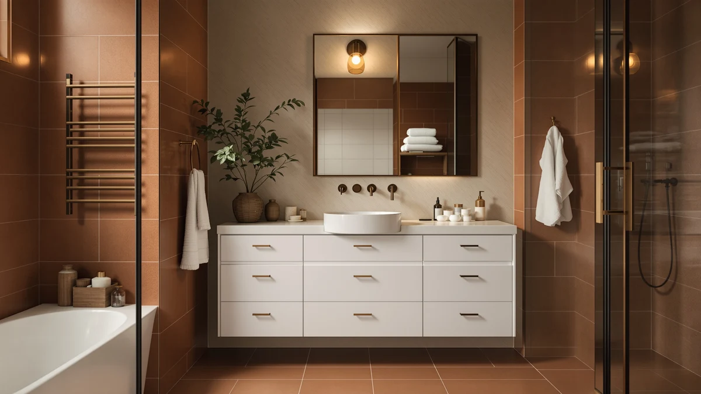

The Best White Vanity Tops (2026)
Prices and picks verified as of September 2026. Independent, reader-supported reviews.


Quick Answer
After comparing seven white vanity tops ranging from a compact 16-inch cabinet to a 48-inch double-drawer unit on size, storage and price, the LIKIMIO 30" Bathroom Vanity with Sink is our top pick for most bathrooms, thanks to its soft-close doors, adjustable shelf and integrated ceramic sink at $198.37. If you need a narrower or wider footprint, the ALBAD 16-Inch and Merax 48-Inch picks below cover both ends of that range.
Our pick: LIKIMIO 30" Bathroom Vanity with — $198.37 Check Price on Amazon
Bottom line: our top pick is the LIKIMIO 30" Bathroom Vanity with Sink at $199.99. The best budget option is the ELEVACHIC 30" Bathroom Vanity with Sink at $159.95.
Things to Know Before You Buy
- Every pick in this comparison ships with an integrated sink. Six of the seven vanities use a glazed ceramic basin, while the Merax 48-inch pick uses an SMC sink top, so you won't need to source a separate basin.
- Sizes span 16 to 48 inches. Four of the seven are true 30-inch vanities, but the ALBAD 16-Inch and Merax 48-Inch picks give you options at either end if your bathroom doesn't fit the standard width.
- Soft-close hardware is standard across this price range. Every vanity here uses soft-close doors, drawers, or both, which cuts down on slamming and wear over time.
- Faucets are sold separately. The listings that specify faucet compatibility, including the LIKIMIO and Merax picks, note the faucet itself is not included, so budget for that as a separate purchase.
- Price tracks size and drawer count more than brand. The $159.95 to $599 spread in this guide mostly reflects cabinet width and storage capacity, not a premium name on the box.
The best white vanity tops pair a clean, easy-to-match cabinet finish with an integrated sink that resists stains and simplifies cleanup, whether you're outfitting a guest bath, a primary bathroom, or a small powder room. We compared seven white vanity-and-sink combinations ranging from a 16-inch compact unit to a 48-inch double-drawer cabinet on size, storage, materials and price, since a single "best" pick rarely fits every bathroom footprint.
Our top pick is the LIKIMIO 30" Bathroom Vanity with Sink at $198.37. Its white finish, matte black hardware and soft-close doors give you a straightforward, versatile look, and the integrated ceramic sink already has three faucet holes drilled in. If your bathroom needs a narrower or wider footprint, the ALBAD 16-Inch and Merax 48-Inch picks further down this guide cover both ends of the size range.
A comparison table further down lets you scan material, price and best use case side by side before you click through to Amazon.
Why You Should Trust Us
Ilane Tall covers home and bath products for Best Bathroom Vanities, where she researches vanities, sinks and bathroom remodel gear for a US audience. For this guide, she and the editorial team compared publicly listed specifications, pricing and verified buyer reviews for white vanity tops across a range of sizes, rather than repeating manufacturer marketing copy. We do not run a fake testing lab or claim to have installed any of these vanities ourselves. Instead, we cross-reference dimensions, materials and owner feedback so you can decide which size and price point fits your bathroom before you buy.
How We Picked
To build this list of the best white vanity tops, we pulled every white-finish vanity-and-sink combination in our product database, then filtered for listings with documented dimensions, materials and pricing. We cut entries with vague or missing spec sheets that made an honest comparison impossible, and we prioritized a spread of sizes and budgets, from the $159.95 ELEVACHIC 30-inch pick to the $599 Merax 48-inch vanity, so this guide works whether you're refreshing a rental bathroom or planning a full remodel.
How We Compared
We are a research-based review site, so we compared these seven white vanity tops using the specifications, pricing and verified owner reviews published for each listing rather than installing units ourselves. We lined up material, stated dimensions, sink configuration and price side by side to see where each vanity earns its cost, and we read through available owner feedback to flag recurring comments about assembly, hardware quality and finish durability. When a complaint shows up repeatedly, we call it out in that pick's drawbacks below. That is the standard behind every comparison in this guide: published specifications plus a pattern in owner feedback, not a physical impression of the product.
Our Picks

LIKIMIO 30" Bathroom Vanity with
What we like
- White finish with matte black hardware gives a classic look that fits most bathroom color schemes
- Two soft-close doors and a three-level adjustable shelf keep towels and toiletries organized
- Integrated ceramic sink has three 4-inch center-set faucet holes and a glazed finish that resists stains
Flaws but not dealbreakers
- Faucet is sold separately, so budget for that as an added cost
- At 34 inches tall, it sits an inch shorter than the also-great LIKIMIO pick below, worth checking against your plumbing rough-in
| Material | MDF / engineered wood |
| Size | 30" W × 18.3" D × 34" H |
The LIKIMIO 30" Bathroom Vanity with Sink is our top pick among the best white vanity tops because it pairs a clean white cabinet with the soft-close hardware and adjustable storage most shoppers want in a primary or guest bathroom. At $198.37, it undercuts the pricier picks in this guide while still including a ceramic sink with an overflow channel and three faucet holes already drilled in.
Owners researching this vanity note that the matte black hardware holds up well against the white finish, and the three-level adjustable shelf behind the two soft-close doors adapts to taller bottles or stacked towels. The 30-inch by 18.3-inch by 34-inch footprint fits a standard vanity opening without requiring custom plumbing work, which is part of why we ranked it above the other LIKIMIO options in this comparison.

LIKIMIO 30" Bathroom Vanity with
What we like
- Two U-shaped soft-close drawers plus a 10.5-inch open shelf keep frequently used items visible and within reach
- Adjustable legs help it sit level on uneven bathroom floors
- Nearly $3 cheaper than our top pick while sharing the same white finish and ceramic sink
Flaws but not dealbreakers
- Open shelf offers less enclosed storage than the two-door layout on our top pick
- Same 18.3-inch depth as our top pick, so it won't fit a noticeably tighter bathroom
| Material | MDF / engineered wood |
| Size | 30" W × 18.3" D × 34.1" H |
The LIKIMIO 30" Bathroom Vanity with Sink, Drawers & Open Shelf is the runner-up in this comparison, and at $195.49 it is the least expensive of the three LIKIMIO options here. Instead of two doors, it swaps in two U-shaped soft-close drawers and a 10.5-inch open shelf, which suits anyone who wants everyday items like towels and bottles visible instead of tucked behind a cabinet door.
Adjustable legs give it an edge on floors that aren't perfectly level, a detail owners researching older bathrooms tend to flag as useful. Since it shares the same white finish, matte black handles and integrated ceramic sink as our top pick, the choice between the two mostly comes down to whether you prefer enclosed doors or open shelving for your daily routine.

LIKIMIO 30" Bathroom Vanity with
What we like
- 35-inch height is an inch taller than the other two LIKIMIO picks in this guide, useful for taller households
- One U-shaped drawer plus two soft-close doors and a three-level adjustable interior shelf
- Same white finish, matte black hardware and integrated ceramic sink as our top pick
Flaws but not dealbreakers
- Costs about $70 more than our top pick despite a similar feature set
- Single U-shaped drawer offers less immediate storage than the runner-up's two-drawer layout
| Material | MDF / engineered wood |
| Size | 30" W × 18.3" D × 35" H |
The LIKIMIO 30" Bathroom Vanity with Sink, U-Shaped Drawer & 2 Doors is the third LIKIMIO pick in this comparison, and the main thing that sets it apart is height. At 35 inches tall, it's an inch taller than the other two LIKIMIO vanities here, a detail worth checking if you're replacing an existing unit and want to match the counter height on a nearby feature.
At $269.04, it costs roughly $70 more than our top pick despite a nearly identical white finish, ceramic sink and soft-close hardware. It makes the most sense for buyers who specifically need that extra inch of height or who prefer the one-drawer-plus-two-door layout over the other two configurations in this guide.

Merax 48 Inch Bathroom Vanity
What we like
- Six drawers plus two soft-close cabinet doors deliver far more storage than any 30-inch pick in this guide
- Solid wood legs and an MDF cabinet keep the price under $600, below many comparable 48-inch vanities
- SMC integrated sink top has a seamless, easy-to-clean surface
Flaws but not dealbreakers
- At $599, it costs roughly three times our top pick, so it's only worth it if you need the extra width
- Seller doesn't list precise cabinet dimensions, so measure your rough-in carefully before ordering
| Material | MDF / engineered wood |
| Size | — |
The Merax 48 Inch Bathroom Vanity is the budget pick among the wider white vanity tops in this guide, and at $599 it undercuts many comparable 48-inch vanities that run well past $700 once you add a sink. It ships with six drawers and two enclosed cabinet doors, giving you the storage of a full double vanity without the double-sink price tag.
The SMC sink top has an integrated basin design, so there's no separate basin to seal or replace down the line, and the smooth surface is straightforward to keep clean. This pick makes sense once you've already decided a 48-inch footprint fits your bathroom; if you need an exact width, confirm the cabinet dimensions on the current Amazon listing first, since Merax doesn't publish a precise measurement in the spec sheet.

ALBAD 16-Inch Modern Bathroom Vanity
What we like
- 16.53-inch width fits apartments, dorms, or a half-bath where the LIKIMIO and Merax picks won't fit
- Soft-close door and an adjustable interior shelf make the most of a compact cabinet
- Scratch-resistant, water-resistant MDF and particleboard construction
Flaws but not dealbreakers
- Single door and shelf offer far less storage than the wider picks in this guide
- Narrow footprint leaves less counter space around the sink for daily items
| Material | MDF / engineered wood |
| Size | 16 Inch |
The ALBAD 16-Inch Modern Bathroom Vanity is the narrowest pick in this comparison, built specifically for bathrooms where even a 30-inch top would crowd the door or toilet. At 16.73 inches deep by 16.53 inches wide by 34.25 inches tall, it's a real option for a dorm room, small apartment or a half-bath tucked under a staircase.
At $169.99, it costs less than every LIKIMIO pick above while still delivering a white finish, a sink, and a soft-close door with an adjustable interior shelf. The tradeoff is storage: one door and one shelf can't match the drawer-and-shelf combinations on the 30-inch and 48-inch picks in this guide, so it's a fit for readers who need the size, not the storage capacity.

ELEVACHIC 30" Bathroom Vanity with
What we like
- At $159.95, it's the least expensive vanity in this entire comparison
- Two soft-close cabinets with door-mounted organizers add storage beyond the interior shelves
- 30-by-18-inch integrated ceramic sink top matches the footprint of the LIKIMIO picks at a lower price
Flaws but not dealbreakers
- Density-board construction is less common in this comparison than the MDF used across most of the other picks
- Seller doesn't list a precise height, so double-check clearance against your existing plumbing
| Material | MDF / engineered wood |
| Size | 30 Inch |
The ELEVACHIC 30" Bathroom Vanity with Sink is the most affordable option in this entire guide, at $159.95, and it still delivers a full 30-inch white cabinet with a matching integrated ceramic sink. Crisp white panels and black hardware keep the look consistent with the pricier LIKIMIO picks above, and two soft-close cabinets, each with a door-mounted organizer, add storage beyond what the interior shelves alone provide.
Owners researching this vanity point to the wide 30-by-18-inch countertop as more usable than its price suggests, and the high-density ceramic sink's glossy glaze is easy to wipe down. It's built from density board rather than the MDF used on most of the other picks here, so it's worth confirming water-resistance details on the current listing if your bathroom sees heavy daily use.

30" Bathroom Vanity with Sink
What we like
- Sliding barn door with metal handles gives it a distinct look among the mostly flat-panel vanities in this guide
- Two drawers plus the barn-door cabinet add flexible storage options
- Ceramic sink and $179.99 price keep it competitive with the other 30-inch-class picks here
Flaws but not dealbreakers
- 16.14-inch depth is shallower than the 18.3-inch depth on the LIKIMIO picks, leaving less counter space
- Farmhouse styling won't suit a strictly modern or minimalist bathroom
| Material | MDF / engineered wood |
| Size | 31.5" W x 16.14" D x 34.65" H |
This 30" Bathroom Vanity with Sink from 4ever2buy stands out in this comparison for its farmhouse styling: a sliding barn door with metal handles and wood-grain paneling instead of the flat-panel doors used on the LIKIMIO and ELEVACHIC picks. At $179.99, it lands in the same price tier as those options while giving buyers who want a farmhouse-adjacent bathroom a matching design.
Two drawers sit alongside the barn-door cabinet, and the included ceramic sink keeps cleanup simple. Its 16.14-inch depth is noticeably shallower than the 18.3-inch depth on the LIKIMIO vanities, so measure your available counter space if you plan to keep items on the top rather than tucked inside the cabinet.
Quick Comparison
| Product | Material | Price | Rating | Best for | Get it |
|---|---|---|---|---|---|
| LIKIMIO 30" Bathroom Vanity with | MDF / engineered wood | $198.37 | 4 | Buyers who want a straightforward white 30-inch vanity | View on Amazon → |
| LIKIMIO 30" Bathroom Vanity with | MDF / engineered wood | $195.49 | 4 | Buyers who prefer drawers and open shelving | View on Amazon → |
| LIKIMIO 30" Bathroom Vanity with | MDF / engineered wood | $269.04 | 4 | Buyers who want an extra inch of height | View on Amazon → |
| Merax 48 Inch Bathroom Vanity | MDF / engineered wood | $599.00 | 4 | Buyers who want a wider 48-inch vanity on a budget | View on Amazon → |
| ALBAD 16-Inch Modern Bathroom Vanity | MDF / engineered wood | $169.99 | 4 | Buyers with a tight, small-bathroom footprint | View on Amazon → |
| ELEVACHIC 30" Bathroom Vanity with | MDF / engineered wood | $159.95 | 4 | Buyers who want the lowest price on a full 30-inch vanity | View on Amazon → |
| 30" Bathroom Vanity with Sink | MDF / engineered wood | $179.99 | 4 | Buyers who want farmhouse-style barn-door storage | View on Amazon → |
The Competition
Several white vanities didn't make our final list of the best white vanity tops. Listings without a documented material, dimension or price were out, since incomplete specifications make it impossible to compare fairly against the seven vanities above. Off-white or cream-finish vanities that were marketed as "white" but photographed with a visibly warmer tone got cut too, since the goal of this guide is a true white finish, not an approximation. Cabinet-only listings sold without a sink also didn't make the cut, because that combination doesn't answer what most readers researching a white vanity top with an integrated sink are asking. Of the seven picks that remain, the LIKIMIO 30" Bathroom Vanity with Sink is still the strongest all-around option, with the ALBAD and Merax picks covering either end of the size range.